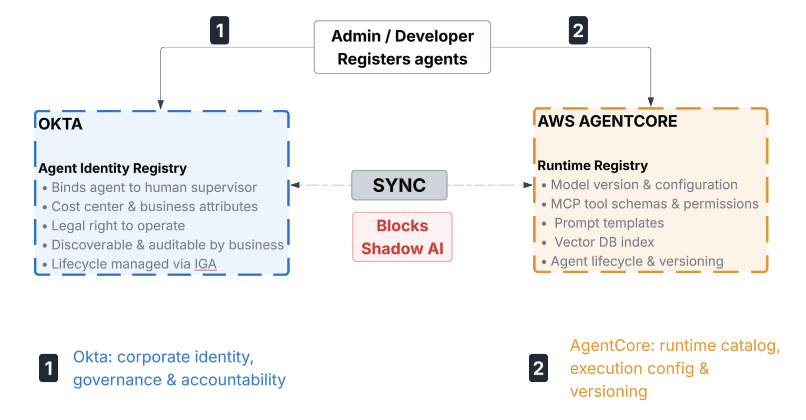

1
Use Case 1: Zero-Trust Inbound Agent Activation
Restricting the environment launch of high-privilege AI workloads to authenticated, risk-verified employees only.
Okta
AgentCore
▼
Architecture Flow

Okta's Role
Evaluates corporate credentials, network egress flags, and real-time device health to issue a secure user access token. In practice, the agent cannot launch unless the requesting employee has authenticated with Okta MFA, passed device compliance checks, and cleared any active risk signals — making Okta as the gatekeeper.
AgentCore's Role
Intercepts the request at the entry, validates Okta's access token, and spins up a runtime session. Every agent is gated on a verifiable Okta JWT — any session launched without a valid, unexpired token is rejected at the perimeter before any access is provisioned.
The Bottom Line
Okta secures the enterprise perimeter; AgentCore leverages that validation to safely spin up the underlying AI compute space.
2
Use Case 2: Cross App Access (On-Behalf-Of a user flow)
An agent needs to securely fetch data from an external API (e.g., Salesforce or Slack) with a specific user's authority.
Okta
AgentCore
▼
Architecture Flow

Okta's Role
Acts as the Authorization Server to enforce global identity topologies and eliminate point-to-point app connections. It mints a token that cryptographically binds the human user and agent identities together. This allows the agent to cross application boundaries securely without exposing primary user tokens or relying on siloed, hardcoded credentials
AgentCore's Role
Triggers the exchange handshake, caches the resulting token inside its credential provider, and injects it into outbound API headers via the AgentCore Gateway. This means the agent developer never writes token-refresh logic — credential lifecycle is a runtime concern handled entirely by AgentCore, not the application.
The Bottom Line
Okta serves as the cryptographic authority to grant cross-boundary access; AgentCore handles real-time credential caching and transport.
3
Use Case 3: Secure AWS Resource Invocation
An agent must securely invoke native AWS resources (code interpreter, web browser, or databases) through AgentCore's gateway.
Okta
AgentCore
▼
Architecture Flow

Okta's Role
Provides the initial access token and authorization context that verifies the agent is permitted to invoke an agent tool on the user's behalf. Okta issues scopes that carries exactly which resource the user can access — this becomes the identity proof for AgentCore .
AgentCore's Role
Configures the execution environment, routes agent tool calls through its gateway for policy enforcement, and invokes native AWS resources (Code Interpreter, Web Browser, DynamoDB, RDS) securely. AgentCore translates the agent's intent into a concrete, permissioned AWS API call, executes it in an isolated session, and returns only the result the agent is authorized to see — keeping the execution blast radius tightly bounded.
The Bottom Line
Okta authorizes the agent with an access token; AgentCore's gateway enforces policies and routes calls securely to native AWS compute and data resources.
4
Use Case 4: Agent Kill Switch
Instantly freezing a live AI reasoning loop the exact second a security team flags an active user session as compromised.
Okta
AgentCore
▼
Architecture Flow

Okta's Role
Detects identity-level risks via Continuous Access Evaluation and fires a back-channel revocation signal the moment an agent is flagged, a threat intelligence hit, or a behavioral signal received from AgentCore itself. This happens in real time, not at the next token expiration.
AgentCore's Role
Intercepts Okta's revocation signal and immediately kills the running agent session. The agent doesn't finish its current reasoning step — the loop is stopped, all pending tool calls are dropped, and the compute thread is terminated before the compromised session can cause further damage.
The Bottom Line
Okta serves as the central radar that detects the identity compromise; AgentCore acts as the emergency brake that stops the AI compute loop before damage occurs.
5
Use Case 5: Fine-Grained Authorization
Designing a secure system that handles both identity relationship rules and agent guardrails simultaneously.
Okta
AgentCore
▼
Architecture Flow — Two Parallel Authorization Checks

Okta's Role
Governs identity relationships and organizational graphs using Okta FGA (ReBAC) to answer coarse-grained ownership questions — for example, whether the requesting user has a direct or inherited relationship that permits the agent to access a specific SaaS Application. This helps AgentCore to enforce the agent's authorization scope so the agent can't even try to reach data outside its authorized scope.
AgentCore's Role
Monitors real-time payload safety checks at the gateway, parsing tool-call parameters and enforcing Cedar policies to block unsafe or out-of-scope values before they reach any backend. Even if Okta grants relational access, AgentCore applies a second, millisecond-level gate on what the agent is actually about to do.
The Bottom Line
Okta FGA governs the organizational who and what; AgentCore handles the immediate, millisecond-level tool safety checks governing the how.
6
Use Case 6: Human in the Loop
Managing high-stakes operations where an agent triggers sensitive tasks, such as substantial financial transfers or critical database modifications.
AgentCore
Okta
▼
Architecture Flow — Pause, Verify, Resume

Okta's Role
Provides the high-assurance verification layer by issuing a step-up challenge — typically an Okta Verify push or WebAuthn prompt — to the supervisor's registered device. The agent thread cannot resume until Okta receives and validates that cryptographic human sign-off, making it impossible for the agent to self-approve a sensitive action.
AgentCore's Role
Detects a sensitive tool execution attempt against its HITL policy — such as a transaction over a defined threshold or an irreversible database operation — and hard-pauses the state machine before the tool is invoked. No further model output is generated and no tool call fires until AgentCore receives the signed confirmation callback from Okta.
The Bottom Line
Use AgentCore to intercept exceptions and pause the runtime; use Okta to facilitate the secure out-of-band identity verification needed to resume work.
7
Use Case 7: Token Vault Usage
Agent is executing a multi-step orchestration thread that takes more than 15-minutes. The token must be rotated without breaking the model inference.
Okta
AgentCore
▼
Architecture Flow — Continuous Token Rotation (Mid-Flight)

Okta's Role
Acts as the central Token Exchange Server, holding long-lived refresh credentials in a secure vault completely isolated from the LLM runtime. When AgentCore signals that a short-lived token is nearing expiry, Okta validates the session hasn't been revoked and mints a fresh, narrowly scoped credential — ensuring the agent always operates with the minimum necessary access for exactly the resource it's currently using.
AgentCore's Role
Acts as the Token Exchange Client, with its runtime Token Vault continuously monitoring active token TTLs. As a token approaches expiry, AgentCore proactively calls Okta's exchange endpoint and hot-swaps the credential in place — the agent's state machine keeps running with no visible gap, and no token-refresh logic needs to be written by the developer.
The Bottom Line
Okta securely governs master application credential lifecycles at the enterprise perimeter; AgentCore manages token execution continuity inside the agent runtime environment.
8
Use Case 8: Registering Agents
Tracking and managing an AI agent requires both strict regulatory compliance oversight across the enterprise and an optimized, dynamic runtime execution engine.
Okta
AgentCore
▼
Architecture Flow — Dual Registry: Identity + Runtime Governance

Okta's Role
Registers the agent as a governed entity and binds it to a human supervisor, a cost center, and business attributes — establishing its legal right to operate within the enterprise. Every agent action is therefore traceable back to a responsible human owner, and the business can discover, audit, or revoke any agent through the same identity governance tooling used for human employees.
AgentCore's Role
Catalogs the actual runtime identity of each agent — model version, prompt templates, vector database indices, and MCP tool schemas — and tracks changes over time. If an agent's behavior shifts unexpectedly, both the code-level artifact that changed and the human accountable for it (from Okta's registry) can be immediately identified, creating a complete governance chain from business identity to execution stack.
The Bottom Line
Okta establishes the agent's corporate identity and liability framework, while AgentCore builds and tracks its cognitive engine. Aligning both registries prevents the deployment of untracked "shadow AI" and ensures every functional agent is fully accounted for by the business.